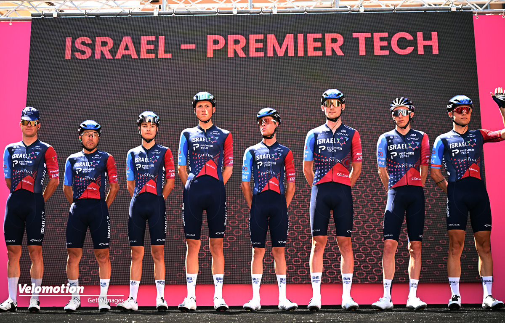

Israel Premier Tech cambia nome e sponsor: nasce Israel Cycling Project
Dopo tre stagioni di successi e momenti difficili, la **Israel Premier Tech** cambia volto. Dal 2026 la squadra assumerà il nome **Israel Cycling Project**, segnando una nuova era per il team di Sylvan Adams.
Il nuovo main sponsor sarà **CheckPoint Technologies**, azienda israeliana leader nel settore della sicurezza informatica. Il team manterrà la licenza WorldTour e continuerà a correre con bici **Factor**, con un nuovo design blu e bianco ispirato alla bandiera israeliana.
Adams ha dichiarato: «Vogliamo costruire un progetto a lungo termine che ispiri i giovani corridori e promuova i valori del nostro Paese nel mondo». La squadra punterà a un mix di esperti e giovani talenti, con l’obiettivo di tornare protagonisti nei grandi giri dopo alcune stagioni difficili.
Il roster 2026 vedrà confermati **Michael Woods** e **Hugo Houle**, mentre si uniranno nuovi nomi dal panorama europeo U23. Il debutto ufficiale è previsto al Tour Down Under a gennaio.